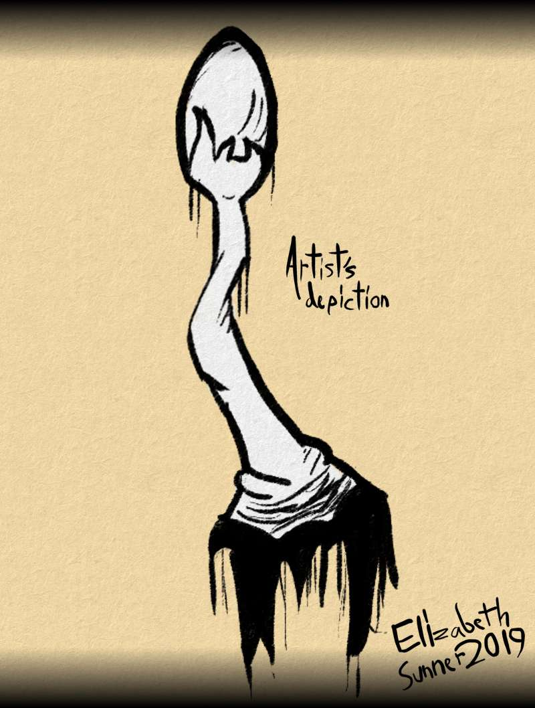

-------------------------------------------------------------------------------
The "Ezt" root is something to be left alone should you come across it. These roots reside on the hill of Ezt Olza, the place the root is named after. If someone were to rip it out, it would release a gas, one that causes whoever to breathe it, if I'm going to be blunt, to die.
Let me elaborate. This gas is something your body naturally rejects. It's very poisonous to this system, and you'll begin to feel a burning sensation in your chest if you happen to inhale it. Shortly after, you'll pass out.
Unconscious, you are still breathing at this point, but you can't make an effort to stop. Since, y'know, you're unconscious. And the gas will begin entering your system more and more. Before you know it, you're bleeding out of most orifices, and you silently pass away. Not the worst way to go, out of the logs i will write in the future, but not ideal.
-------------------------------------------------------------------------------